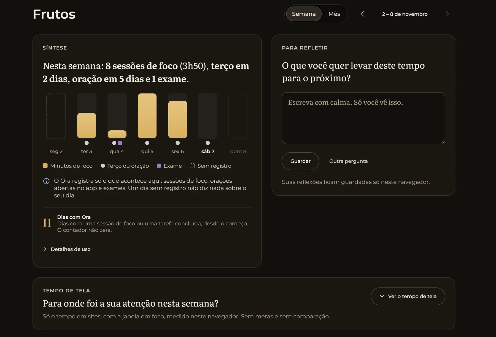

Exemplo de síntese
Um dia para rever.
- Tarefa escolhida na prévia
- Revisar minhas anotações
- Tempo de foco
- Na extensão, veja o tempo das suas sessões.
- Espaço para oração
- Relembre suas práticas e anote uma reflexão.
A nova aba católica
Comece o dia com uma intenção. Abra o Evangelho, escolha uma tarefa e proteja seu tempo de foco, direto na nova aba.

Demonstração interativa
Role para acompanhar ou escolha uma etapa. A intenção e a tarefa de exemplo já estão prontas para você experimentar.
01 · Organizar
Escolha uma intenção e tenha a próxima tarefa à vista.
02 · Focar
Reserve um tempo para o que você escolheu fazer.
03 · Proteger
Se uma rede social interromper a sessão, o Ora traz sua tarefa de volta à tela.
04 · Rezar
Abra o leitor e encontre um instante para rezar.
Oferecer o dia por…
Em foco
Seu tempo está reservado para Revisar minhas anotações
Faltam 25 min
Ave Maria, cheia de graça,
o Senhor é convosco,
bendita sois vós entre as mulheres
e bendito é o fruto do vosso ventre, Jesus.
Santa Maria, Mãe de Deus,
rogai por nós, pecadores,
agora e na hora da nossa morte. Amém.
Seu próximo passo já está pronto. Você pode personalizá-lo.
Ver o dia em FrutosDemonstração interativa Bloqueio simulado
Frutos
Em Frutos, o Ora reúne o tempo de foco, as práticas de oração e um espaço para refletir sobre a semana ou o mês.
Exemplo de síntese

Ao longo do dia, você também pode abrir a liturgia, acompanhar o terço, ouvir playlists ou fazer um exame de consciência.
Dúvidas e privacidade
O Ora é gratuito, de código aberto e feito por católicos como projeto independente.
Você encontra o Pomodoro, o bloqueio de distrações, a liturgia e a biblioteca de orações. Nesta página você pode experimentar uma sessão de foco e ajustar o leitor de oração.
O Ora dispensa cadastro e usa o armazenamento do navegador para seus dados e preferências. Veja a política de privacidade.
Você pode instalar a extensão no Chrome, Firefox, Edge e Brave no computador. No celular, você pode experimentar a demonstração desta página.
Se o navegador pedir confirmação após a instalação, escolha manter as alterações. Se a extensão estiver desativada, consulte o guia de ativação no Chrome e no Edge.
Buscar a liturgia do dia, carregar novas fotos de fundo e ouvir playlists do YouTube ou Spotify exige conexão.
Instalação
Escolha a loja do seu navegador no computador. O Ora é gratuito e dispensa cadastro.
Chrome Web Store Firefox Add-ons ↗ Guia de ativação